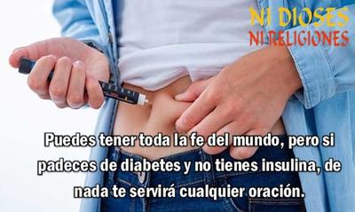

Hoy 14 de noviembre, el mundo conmemora el Día Mundial de la Diabetes, en honor al nacimiento de Frederick Grant Banting (1891–1941), quien junto a Charles Best (1899-1978), cambió para siempre la historia de la medicina y de millones de vidas. En 1921, en un modesto laboratorio de la Universidad de Toronto, ambos médicos canadienses, bajo la dirección del médico escocés John Macleod (1876-1935), descubrieron la insulina, aislándola del páncreas de perros sanos e inyectándola a perros diabéticos, observando que sus niveles de glucosa en la sangre disminuían significativamente, mejorando drásticamente su condición. Y con la ayuda del bioquímico canadiense James Collip (1892-1965) lograron purificarla, haciéndola disponible para el tratamiento exitoso de la diabetes en humanos. Un milagro tangible —no divino— que permitió salvar la vida a incontables personas, condenadas hasta entonces por una cruel e incomprensible enfermedad.


Así, en 1922, gracias al pensamiento crítico y al método científico, la humanidad logró lo que ninguna divinidad, en milenios de súplicas, plegarias y sacrificios había conseguido: devolverle la vida a niños en coma diabético. La impresionante escena, descrita como uno de los momentos más increíbles de la medicina, aún emociona:
Los científicos llegaron a una sala de hospital de Toronto con niños diabéticos, la mayoría de ellos en coma y falleciendo de cetoacidosis diabética (CAD), una condición que se presenta en pacientes con diabetes mellitus tipo I, cuando su cuerpo se descompensa y produce el coma hipoglucémico —y la pérdida de la vida si no se hace algo al respecto. Pero hasta entonces, nada podía hacerse. La habitación estaba llena de padres sentados junto a las camas, esperando la inevitable pérdida de sus hijos. Pero los científicos pasaron de cama en cama inyectando a los niños el nuevo extracto purificado —la insulina. Y mientras inyectaban al último niño comatoso, el primer niño inyectado comenzó a despertar. Entonces uno por uno, todos los niños recuperaron la conciencia. Y aquel cuarto lleno de tristeza y frustración, de pronto se convirtió en un lugar lleno de alegría y esperanza.
El descubrimiento hizo que se otorgara a Banting y Macleod el Premio Nobel de Fisiología o Medicina en 1923, una decisión que generó controversia, porque sólo se reconoció a ellos dos, por lo que Banting compartió su parte con Charles Best, y Macleod compartió la suya con James Collip.
Actualmente la insulina ya no se extrae del páncreas de animales para luego purificarla, produciéndose principalmente mediante tecnología de ADN recombinante, utilizando bacterias o levaduras modificadas genéticamente, para producir insulina humana sintética.
Pero fue debido al trabajo investigativo de los doctores Banting y Best (gracias a su pensamiento crítico y a la aplicación del método científico), que hace apenas un siglo, miles de personas dejaron de fallecer a causa de la diabetes. Y esto no hubiera ocurrido, si la humanidad siguiera atribuyendo las enfermedades a «espíritus inmundos», «condenaciones» y otras causas sobrenaturales. Imaginemos cuántos padres antes, durante siglos, como aquellos que estaban junto a sus hijos en aquella habitación, oraron y suplicaron con lágrimas en sus ojos, para que «Dios» les concediera un milagro. Pero no funcionó, el cielo permaneció indiferente. No hubo respuesta, ni milagro, ni «designio divino» que detuviera aquel sufrimiento, sencillamente porque no había insulina.
Durante miles de años la humanidad observó impotente cómo la diabetes —un azote que provoca sed insaciable, hambre sin saciedad, orina abundante y una lenta y un doloroso fallecimiento— cobraba vidas sin distinción, sin que ninguna oración funcionara. Porque «Dios», con sus «planes misteriosos» y sus «tiempos perfectos», decidió que la cura se conociera hasta 1921, cuando aquellos científicos —sin visiones, ni apariciones, ni mensajes del más allá— se dedicaron simplemente a pensar, experimentar y descubrir.
Pero además «Dios», tan ocupado creando galaxias y castigando infieles, olvidó dejar en su «manual sagrado» alguna pista útil sobre el páncreas o la insulina. En ninguna parte de la Biblia o del Corán hay una mínima referencia sobre cómo tratar la diabetes. Ni un versículo que diga: «Si tu cuerpo no produce la sustancia que regula el azúcar en tu sangre, extráela del páncreas y purifícala». Nada.
«Dios» se limitó durante mucho tiempo a producir la enfermedad, pero no la cura, ya que es él quien, según Isaías 45:7, crea tanto el bien como el mal. Es, por lo tanto, también el autor de este trastorno metabólico devastador, o al menos, el diseñador de un cuerpo humano con un páncreas tan imperfecto que puede destruirse a sí mismo.
Hoy, más de cien años después de aquel descubrimiento, millones de personas con diabetes viven gracias al legado de Banting y Best, no a las oraciones. Su historia nos recuerda que los milagros no caen del cielo: se investigan, se prueban y se inyectan. En lugar de esperar la intervención de lo divino, el ser humano, con su razón, su duda y su tenacidad, encontró el camino para convertir la tragedia en esperanza.
Así que en este 134 aniversario del nacimiento de Frederick Banting, rendimos homenaje no a los «designios misteriosos de Dios», sino a la mente humana, libre, crítica y empática, que se atrevió a desafiar el misterio, no con fe dogmática, sino con ciencia. Y mientras algunos continúan doblando rodillas, otros —siguiendo el ejemplo de Banting— usan tubos de ensayo. Porque la ciencia no promete milagros: los hace realidad.
[Godless Freeman]
Comentarios
Comments powered by Disqus